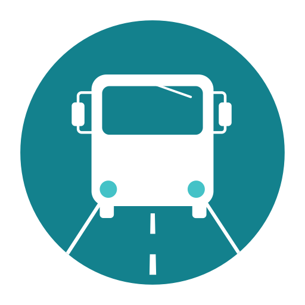

Vous pouvez achetez les tickets dans les kiosques et tabac. Le ticket standard coûte 1,20€ et à une durée de 90 minutes après sa validation. D’autre ticket sont disponible tel que le billet valable 24h (5€), le billet valable pendant 3 jours (12€).
Attention, veuillez bien vérifier que vous avez composté votre ticket correctement et du bon côté. L’horodatage doit être bien lisible sous peine d’amende de 50€ (qui peut être majoré si vous ne payer pas au plus vite).
Vous pouvez trouver les plans des bus grâce au lien ci-contre: 
La prise en charge est tout d’abord de 3,30€ en semaine, 5,30€ les dimanche et jours de fête ou 6,60€ de 22h à 6h. Puis le reste varie en fonction de votre destination.
Pour appeler un taxi, vous pouvez en appeler un depuis une place principal tel que ou alors appeler
un des numéros suivant :
+39 0554390
+39 0554798
+39 0554499
+39 0554242
Même si les taxis en maraude sont interdit, vérifiez que le taxi est de couleur blanche. On vous conseille de demander la mise en marche du compteur.